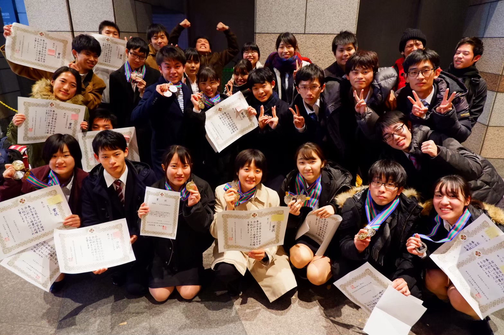

令和元年 冬季全九州学生大会
- 男子茶帯単独の部
- 男子茶帯組演武の部
- 男女茶帯組演武の部
- 女子初段組演武の部
- 女子二段以上組演武の部
- 男女二段以上組演武の部
- 女子運用法Aコート
- 女子運用法Bコート
- 団体演武
- 白緑帯男子組演武の部
第3位
小山拓人
第3位
金田昂之・森田修斉
第4位
山﨑基数・吉村篤哉
第4位
千ゆう子・小山拓人
第2位
小原愛弥・夫婦石千尋
第1位
梅田幸乃・土屋もえり
第1位
岡崎萌・高塚大地
第2位
夫婦石千尋
第1位
大川果瑠菜
第2位
九州大学A
本戦出場
宮崎祥・李汭哲
四十三代目 大会成績
- 男子初段組演武の部
- 団体演武の部
- 段外組演武の部
- 運用法の部
- 団体演武
- 総合順位
- 女子白緑単演の部
- 男子白緑単演の部
- 男子茶帯単演の部
- 男子有段単演の部
- 男子茶帯組演武の部
- 男子初段組演武の部
- 男子二段以上組演武の部
- 女子二段以上組演武の部
- 男女二段以上組演武の部
- 運用法の部
- 団体演武の部
- 総合の部
福岡県大会
第1位
綾戸 西山
本戦出場
堀内 安川
本戦出場
九州大学
七大戦＠東京大学
本戦出場
山田 大久保
第4位
第5位
第4位
全日本大会
初段組演武
綾戸 西山
全国大会in大分
有段組演武
綾戸 西山
全九州学生大会
第1位
高口
第1位
井福
第2位
原
第3位
綾戸
第1位
大久保 原
第1位
綾戸 西山
第4位
橋口 秋山
第2位
吉村 薄田
第1位
杉村 松田
第1位
西山
第２位
九州大学